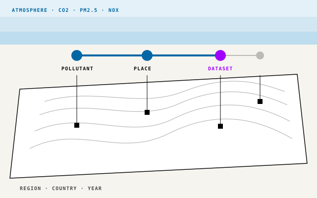

Use case · Discovery before migration
Know what you hold before you move it.
Migration starts with what exists, where, and what depends on it. The Environmental Agency here is fictional. Its air-quality evidence is scattered. The MCP Tool Shed reaches it, a graph connects it, and a System 1 model decides if it is enough.

- ReachMCP Tool Shed. MCP servers, some with a RAG index behind them, reach documents, records and live systems.
- ConnectContext fabric. The graph links pollutant, place, year and dataset.
- DecideSystem 1 (Jev). Answers, asks, refuses or escalates.
- ShowVisibility. Every outcome shows its path and datasets.
01 · The gap
The model can't see your catalogue.
A language model knows air quality in general, not your datasets, breakdowns, publishers or dates. One request needs many kinds of evidence.
The requestAnnual PM2.5 by country, 2019 to 2024, official sources only.
| The answer needs | Shape | Usually in |
|---|---|---|
| What PM2.5 is, and its pollutant group | prose | Methodology documents |
| Which datasets hold it, by country and year | tables | Coverage tables |
| Publisher and last update | records | Catalogue metadata |
| Country to continent, year to range | relationships | Reference hierarchies |
| Whether this person may see it | policy | Access rules |
02 · Reach
Two ways to reach evidence.
Both add context for one request, without retraining. They differ in reach and in who decides.
RAG
Retrieval-augmented generation · a technique
Pre-index documents. Add the best matches to the prompt.
- Suits
- Methodology: what PM2.5 is.
- Who decides
- Your code, before the model runs.
- Fresh as
- The last index rebuild.
MCP
Model Context Protocol · an open standard
Connects an AI app to servers of tools, resources and prompts. The model asks; the app calls [2].
- Suits
- The catalogue: coverage, metadata, records.
- Who decides
- The model, as it works, or a person.
- Fresh as
- The system behind the server.
They combine. A search_methodology MCP tool can sit on a RAG index. The MCP Tool Shed governs these servers; each agent gets only what it needs.
Data shape matters as much as location.
| RAG | Data shape | A well-built MCP tool |
|---|---|---|
| strong Chunk, embed, rank, cite. | Textmethodologies, reports | good A search tool over an index. |
| good Multimodal embeddings or captions. | Imagesmaps, charts, scans | good Returns the original; still needs search. |
| weak Chunks split rows from headers. Can't sum, filter or join. | Tablescoverage, measurements | strong Exact filters, joins and totals. |
| mixed Loses field names. Fine for "similar", poor for "official, since 2024". | Recordsmetadata, JSON, logs | strong Filters by field; schema-checked results [2]. |
Qualitative ratings, not benchmarks.
- A connection, not a data engine.A server that dumps text is no better than a chunk.
- Only what's exposed.No aggregate tool, no total. Each tool needs upkeep.
- Wrong queries still run.A bad filter returns a confident wrong answer.
- Results fill the window.Filter on the server [3].
Neither route checks the pieces fit together or are enough.
03 · Before any request
Sift raw storage first.
Amazon S3, Azure Blob Storage and Google Cloud Storage hold millions of schemaless files. Names don't say what's inside. Embed it all and CSVs become noisy prose.
Production pattern · not part of this demo
S3, Blob Storage, Cloud Storage: PDFs, CSVs, JSON, logs, scans, maps
- Relevant?
- What shape?
- Who may see it?
- Where does it go?
Each call has a confidence. Below the threshold, it escalates to a person.
04 · Connect
Access isn't understanding.
Each route returns a fragment. The graph links them, so coverage is checked, not guessed.
"PM2.5: fine particulate matter, 2.5 micrometres or less…"
True, but names no dataset.
European Air Emissions Reporting · official · updated 2025
Accurate, but silent on coverage.
PM2.5 → by country, by year → held by this dataset → from this publisher
Two fragments become one answer.
The worked request as a graph path
- Request
- asks for
- PM2.5
- broken down by
- Country · Year
- covered by
- European Air Emissions Reporting
- published by
- Official publisher
The graph checks every country and year has a source, whether datasets combine, and roll-ups to continents.
Graph traversal is not Microsoft GraphRAG
This demo follows typed catalogue links. GraphRAG builds and summarises an entity graph from text; it beat vector RAG on some whole-corpus questions [4].
05 · Decide
Evidence still needs a decision.
Jev, TypeSafe's System 1 decision model [6], is the decision layer. Each step picks from fixed answers, with a confidence. The pipeline acts only above threshold.
Not a retriever, protocol or database. It stores no facts; it decides what the agent may do with them.
- Can the catalogue answer?answer · ask · refuse
- Which pollutants?yes or no per graph candidate
- At what breakdown?one level per dimension
- Best fit to preference?ranked, only among graph-proven options
- Too uncertain?below threshold → escalate
- Answer
- Ask
- Refuse
- Escalate
- No data
06 · Try it
Ask the catalogue.
Deterministic rules over illustrative data, in your browser or on the Rust service. Pick an example or write your own.
Pipeline path
Why this outcome
Matched datasets
Technical details
What this proves
Today, and in production.
In this demo
- An in-memory graph of eight illustrative sources.
- Coverage checks, including combined sources and roll-ups.
- Five outcomes; refusal and clarification before search.
- Traceable results: stages, datasets and reasons.
- In-browser rules or the portable Rust service.
Added in production
- A RAG index over methodology, maps and charts.
- The MCP Tool Shed over catalogue, storage and source systems, with short-lived delegated access.
- Ingestion and sifting from object storage.
- A persistent graph database.
- A System 1 model such as Jev, calibrated thresholds and human review.
Where RAG and MCP failFailure modes by kind, for technical advisers.
| Kind | RAG fails when… | MCP fails when… |
|---|---|---|
| Finding | The right passage is never retrieved. | Wrong tool or bad arguments. |
| Attention | Too many chunks; mid-prompt text is used less well [5]. | Long tool lists and big results crowd the window [3]. |
| Freshness | The index lags the source. | The server reads a stale copy. |
| Access | Chunks reach people barred from the source. | Long-lived keys, not delegated access. |
| Blast radius | A confident wrong answer. | A side-effecting tool runs on a bad decision. |
| Both | Untrusted text in documents or tool results can carry instructions. In MCP, tool descriptions can too. | |
Jev can't fix retrieval. It can refuse, ask for detail or escalate when evidence falls short.
SourcesLinks last checked 5 October 2026; [6] checked 12 October 2026.
- Lewis, P. et al. "Retrieval-Augmented Generation for Knowledge-Intensive NLP Tasks." NeurIPS, 2020. arxiv.org/abs/2005.11401
- Model Context Protocol. Specification, revision 2026-07-28: server primitives and tools.
- Anthropic. "Code execution with MCP." 4 November 2025. anthropic.com. On the token cost of tool definitions and results.
- Edge, D. et al. "From Local to Global: A GraphRAG Approach to Query-Focused Summarization." 2024. arxiv.org/abs/2404.16130
- Liu, N. F. et al. "Lost in the Middle: How Language Models Use Long Contexts." TACL 12, 2024. aclanthology.org/2024.tacl-1.9
- TypeSafe. "Introducing System One models and Jev." typesafe.ai
- The worked request, catalogue and sources are illustrative. Storage sifting is an architecture pattern, not a demo feature.